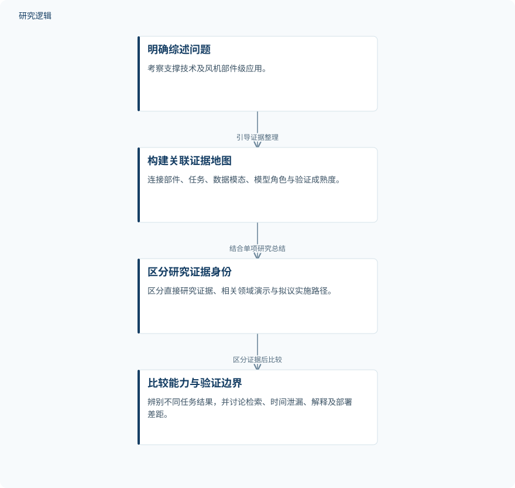

摘要解读
大语言模型用于风力机故障诊断：使能技术、部件级应用与未来展望综述
Large Language Models for Wind Turbine Fault Diagnosis: A Review of Enabling Technologies, Component-Level Applications, and Future Perspectives
解读更新 2026-11-10 10:24 · 依据公开摘要整理，未核验全文细节
大语言模型能否用于风机故障诊断，不能只看它能否预测数值、检索知识或生成报告。这篇综述的阅读价值，在于区分不同模型角色及其证据要求，帮助读者判断“展示了能力”与“具备现场应用条件”之间的距离。
文章目录
风机诊断需要的不只是语言能力
风机故障诊断需要在变化的运行工况下，将异构测量信息与工程知识结合起来。大语言模型正被探索用于数值诊断、巡检信息解读和诊断决策支持，但这些用途面对的任务不同，所需的有效性证据也不同。
因此，这篇综述关注的并非笼统的“大模型能不能诊断”，而是具体部件、具体任务中的模型究竟承担什么角色，以及现有验证能够支持多强的应用判断。
用证据地图连接部件、任务与验证成熟度
作者采用结构化叙述性综述，考察相关支撑技术，以及轮毂与叶片、齿轮箱、轴承和发电机的部件级应用。明确的综述问题引导证据地图构建，将部件、任务、数据模态、模型角色与验证成熟度联系起来。
在单项研究的总结中，综述进一步区分直接研究证据、相关领域演示和拟议实施路径。这种整理方式保留了不同材料的证据身份，避免把尚待实施的设想当作已完成的诊断验证。
依据摘要整理的综述证据组织示意


概括综述问题、证据地图与能力比较之间的关系，不代表论文原图或现场诊断流程。
下载 SVG图示关系说明
实线表示相邻阶段的信息流，虚线表示跨阶段联系或反馈。
明确综述问题 → 构建关联证据地图：引导证据整理；构建关联证据地图 → 区分研究证据身份：结合单项研究总结；区分研究证据身份 → 比较能力与验证边界：区分证据后比较
检索、预测与报告生成不能互相替代
摘要报告的核心比较结论是：特征选择、适配后的数值预测、知识检索和报告生成，其结果不能被视为可相互替代的诊断能力。评价大模型时，需要保留任务边界，不能用某一环节的表现概括整个诊断流程。
综述还讨论了未成功的检索配置、可能的时间泄漏、未经验证的解释，以及回顾性现场数据评估与实际运行部署之间的差距。这些问题共同指向应用就绪程度的判断，而不只是输出结果是否看起来合理。
摘要尚不能支撑性能排名与部署结论
本解读仅依据完整摘要，不能据此判断纳入研究的数量、样本规模、数据来源分布、具体比较基线及验证覆盖范围，也无法确认各项风险对应哪些研究、影响程度如何。这些信息是摘要未提供，而非论文没有开展相关工作。
摘要提到将不确定性与匹配的消融比较、验证及前瞻性现场研究相联系，但这属于综述提出的研究方向，不能据此认定相应验证已经完成，或大模型已被证明能够改善现场运维效果。
阅读启发：先问模型负责哪一段诊断
阅读启发：评估智能运维中的大模型研究时，可以先问它负责的是数值判断、知识获取，还是信息表达，再核对证据是否直接支持这一角色。进一步阅读本文时，值得关注作者如何划分验证成熟度，以及如何区分直接证据、跨领域演示与实施设想，而不是急于寻找统一的能力排名。
以上为本站阅读启发与建议，不是论文已验证的结论。